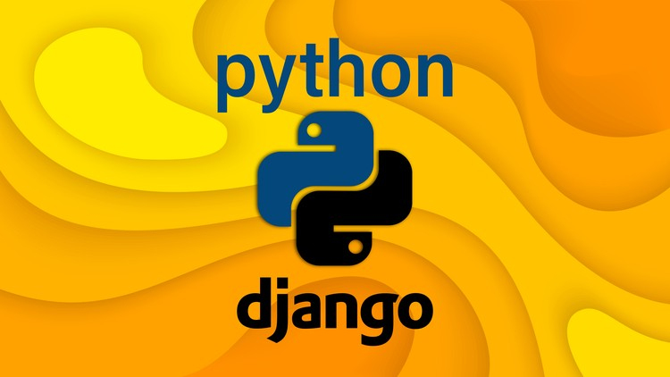

Cuando comencé a familiarizarme con Python me encontré con un Lenguaje sencillo y claro, con un ecosistema
diverso en cuanto a Frameworks, paquetes y bibliotecas a disposición que brindan una flexibilidad para
trabajar de una manera muy cómoda y de fácil implementación.
Esto me llevó a investigar y a aprender su utilización creando para ello diferentes proyectos.
-
Tkinter
-
Con el fin de conocer como trabajar e implementar diferentes paquetes en lo que a Graphical User Interface
(GUI) se refiere es que creo una simple Calculadora.
-
Continuando con Tkinter y con el objetivo de aprender a crear una aplicación CRUD sobre una base de
datos SQLite, y utilizando lógica en Python, he realizado este pequeño pero muy enriquecedor proyecto.
-
django
-
Durante mi aprendizaje de Django, he adquirido habilidades en la implementación de aplicaciones web robustas y
funcionales.
Un ejemplo destacado es el desarrollo de un Sistema de Administración Escolar.
En este proyecto, implementé una aplicación CRUD que gestiona usuarios, grados, cursos, alumnos y sus respectivos
referentes familiares. También desarrollé una lógica específica para la asignación de calificaciones mensuales.
Inicialmente, utilicé PostgreSQL como base de datos, pero luego migré a SQLite para facilitar una mejor distribución
y manejo del sistema.
Este proyecto me ha permitido profundizar en conceptos clave de Django, como la creación de modelos, vistas y
plantillas, así como la gestión de bases de datos y la implementación de autenticación y autorización de usuarios.
Este proceso de aprendizaje ha sido muy enriquecedor y me ha proporcionado una base sólida para futuros desarrollos
en Django.
Última actualización: 15 de Julio de 2024